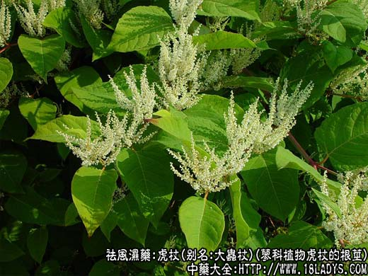
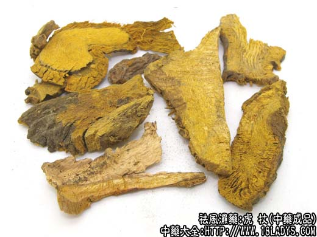
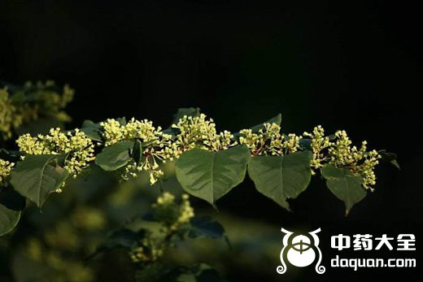
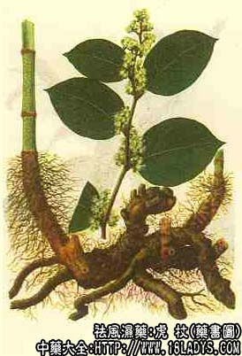

虎杖为少常用中药。始载于《名医别录》列为中品。它主要具有抗菌，抗病毒的作用，还有祛风除湿、破血通经、消炎止痛的功效，主要针对风湿病，妇女闭经等症状，下面中药师宁宁为大家分享虎杖图片以及功效与作用。

虎杖图片 种植

药材虎杖图片

虎杖图片开花

别名：大虫杖、苦杖。
来源：为蓼科植物虎杖的根茎，其叶亦供药用。野生与栽培均有。
产地：主产于河北、西北、华东、华中、华南、西南等地区。
性状鉴别：根呈圆柱形，表面棕褐色，有纵皱及根痕，长1~7厘米，直径0.6~2厘米。断面皮部薄，棕褐色与木质部较易分离，木部占大部分，呈放射状，根茎髓中央有隔或呈空洞状，质坚硬，气微弱，味微苦，涩。
主要成分：根茎含游离蒽醌甙，主要为大黄素、大黄素甲醚大黄酚。另含鞣质和几种糖。
1、抗菌作用：体外实验，虎杖煎剂(25%)对金黄色葡萄球菌、卡他球菌、甲型或乙型链球菌、大肠杆菌等有抑制作用。
2、抗病毒作用：用人胚肾原代单层上皮细胞组织培养，虎杖水煎剂液(10%)对流感亚州甲型京科68~1株病毒，孤儿病毒、单纯疮疹病毒均有抑制作用。
炮制：切片、生用。
性味：苦、平。
归经：入肝、脾经。
功能：祛风除湿，破血通经，消炎止痛。
主治：风湿腰腿痛，湿热黄疸，淋浊带下，妇女经闭、跌打损伤。
临床应用：虎杖的主治，其血之功与天名精相似，其疗风之功与王不留行同。故对治妇科疾病、风湿关节痛、肝炎等有效。治腹内积聚，四肢沉重，月经不调，以及黄疸肝炎等。虎杖一味煎服；治风湿腰腿痛，四肢麻木，常与川牛膝、五加皮等配伍，以增加疗效。
使用注意：孕妇忌服。
用量：9~30g，或浸酒。外用研末或煎水洗。
处方举例：1、治妇人月水不利，腹胁妨闷、背臀烦疼。虎杖90g、凌霄花30g、没药30g，共捣为细末。不计时间、以热酒冲服3g。（《圣惠方》）。
2、治胆囊结石：虎杖30g，煎水服。如兼黄疸，可配合金钱草等煎服。（《上海常用中草药》）。
了解更多祛风湿药，为您推荐↓↓↓↓